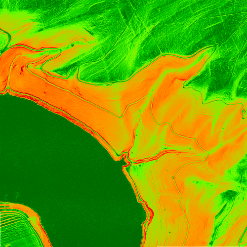
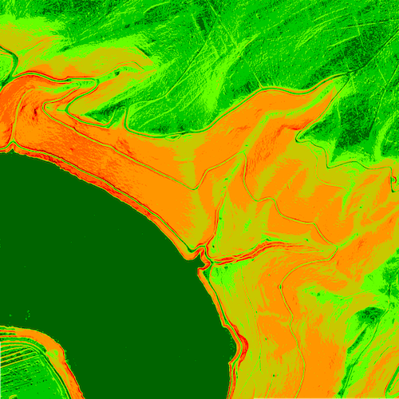

Die Kolorierung von Abbildungen (Visualisierungen) spielt eine entscheidende Rolle, um komplexe Informationen zugänglich und verständlich zu machen. Oft geht es darum, Muster, Trends und Ausreißer in Datensätzen schnell und intuitiv zu erkennen. Farben sind dabei ein mächtiges Werkzeug, da sie es uns ermöglichen, unterschiedliche Kategorien zu unterscheiden, Wertebereiche darzustellen und Hierarchien zu verdeutlichen.
Um die Aussagekraft von Abbildungen zu maximieren, sollten einige Prinzipien beachtet werden:
Die Kolorierung von Datenvisualisierungen ist weit mehr als nur ästhetisches Design; sie ist ein fundamentaler Bestandteil der Informationsvermittlung. Durch den gezielten Einsatz von Farben können wir wertvolle Einblicke gewinnen, fundierte Entscheidungen treffen und das Potenzial unserer Daten voll ausschöpfen.
Alle Abbildungen, die Farben zur Visualisierung von Sachverhalten nutzen, erwarten als Parameter eine Farbsteuerdatei. Spezifikation:
# Winkel- und Farbschema für die Abbildung von Hangneigungen
# Musterdefinition als Basis für eigene Anpassungen
# Format: Wert Rot Grün Blau Alpha
0 0 100 0 255
5 0 200 0 255
10 100 255 0 255
20 200 200 0 255
30 255 150 0 255
40 255 100 0 255
45 255 0 0 255
60 150 0 0 255
90 0 0 0 255
nv 0 0 0 0
Erläuterungen:
Diese Option interpoliert die Farben linear zwischen den Farbtabellen-Einträgen. Das bedeutet, wenn ein Höhenwert zwischen zwei definierten Farbpunkten liegt, wird eine Mischung der beiden Farben verwendet. Dies führt zu einem weichen Farbverlauf. Ideal zum Beispiel für Abbildungen, bei denen fließende Übergänge zwischen Höhenlagen dargestellt werden sollen.
Beispiel zur Verdeutlichung des Sachverhalts
0 white # Höhe 0m ist weiß
100 red # Höhe 100m ist rot
200 blue # Höhe 200m ist blau
| Höhe | Farbe |
|---|---|
| 0m | Weiß (entspricht genau dem Eintrag in der Farbtabelle) |
| 50m | Ein sanfter Übergang zwischen Weiß und Rot, also ein Rosa-Ton. (50m ist genau die Hälfte zwischen 0m (weiß) und 100m (rot), also wird die Farbe halbiert gemischt.) |
| 100m | Rot (entspricht genau dem Eintrag in der Farbtabelle) |
| 150m | Ein sanfter Übergang zwischen Rot und Blau, also ein Violett-Ton. |
Beispiel für eine kolorierte Hangneigungskachel
Kolorierung der Hangneigung mittels linearer Interpolation.
Jeder Höhenwert erhält die Farbe des nächstgelegenen Eintrags in der Farbtabelle. Es wird nicht interpoliert, sondern der nächste definierte Punkt als Referenz genommen. Dies kann zu "gestuften" oder "bandförmigen" Farbdarstellungen führen. Ideal zum Beispiel für Abbildungen, bei denen klare, scharfe Grenzen zwischen Höhenbereichen visualisiert werden sollen, z. B. für Schwellenwerte oder Klassifizierungen.
Beispiel zur Verdeutlichung des Sachverhalts
0 white # Höhe 0m ist weiß
100 red # Höhe 100m ist rot
200 blue # Höhe 200m ist blau
| Höhe | Farbe |
|---|---|
| 0m | Weiß (nächstgelegener Eintrag ist 0m) |
| 49m | Weiß (49m ist näher an 0m als an 100m) |
| 50m | Rot (50m ist exakt in der Mitte; in der Praxis wird oft zum nächsthöheren Wert gerundet.) |
| 51m | Rot (51m ist näher an 100m als an 0m) |
| 100m | Rot (nächstgelegener Eintrag ist 100m) |
| 149m | Rot (149m ist näher an 100m als an 200m) |
| 150m | Blau (150m ist exakt in der Mitte; in der Praxis wird oft zum nächsthöheren Wert gerundet.) |
Beispiel für eine kolorierte Hangneigungskachel
Kolorierung der Hangneigung mittels nächstgelegener Farbzuweisung.
Bei bekannten Datenwerten ermöglicht eine geeignete Kombination aus granularer Farbsteuerdatei und geeignetem Farbzuweisungsalgorithmus oft sehr detaillierte und informative Abbildungen. Um dorthin zu gelangen bedarf es meist einiger empirischer Versuche. Diese lassen sich aber mit den Möglichkeiten auf dieser Webseite recht schnell und einfach durchführen.
Über den Dienst Kolorierung können Farbsteuerdateien definiert, eingelesen, editiert und gespeichert werden.
© 2025 - Höhendaten für Deutschland